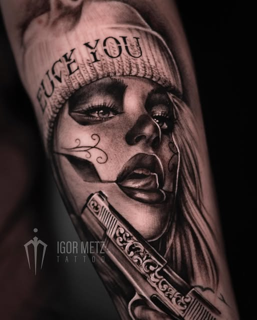
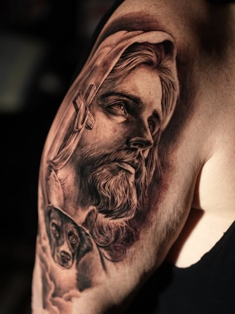

Tätowierer in München
Realistische Tattoos mit Schwarz & Grau
Portrait, Tiere, Cover-Ups und exklusive Einzelstücke – mit Liebe zum Detail gestochen in München.

Über mich
Hey, ich bin der Igor
Ich bin Tätowierer aus München und tätowiere seit mehr als fünf Jahren. Tiere und Portraits im realistischen Stil sind meine Stärken – wenn du ein realistisches Tattoo mit Liebe zum Detail willst, bist du bei mir genau richtig.
Ich arbeite fast ausschließlich in Black & Grey: weiche Verläufe, harte Kontraste, fotorealistische Details. Jedes Motiv wird individuell für dich entworfen – kein Motiv zweimal.
- Realistic Black & Grey – mein Stil, meine Handschrift
- Portraits – Menschen, Gesichter, Emotionen
- Tiere – vom Wolf über den Löwen bis zum geliebten Hund
- Cover-Ups – aus alt mach neu
- Exclusive Tattoos – Unikate, die sonst niemand hat
So läuft's ab
Von der Idee zum Tattoo
Transparent, unkompliziert, ohne Termin-Roulette. In vier Schritten zu deinem Unikat.
Anfrage
Schick mir deine Idee über das Anfrageformular – mit Körperstelle, Größe, Stil und ein, zwei Referenzbildern.
Entwurf
Ich entwerfe dein individuelles Motiv und wir stimmen Details ab, bis alles sitzt.
Termin
Wir planen die Sitzung – je nach Größe als Tagessitzung oder mehrere Termine. Größere Projekte planen wir gemeinsam von Anfang an.
Pflege
Du bekommst eine klare Pflegeanleitung, ich bleih erreichbar – für ein Tattoo, das auch nach Jahren sitzt.